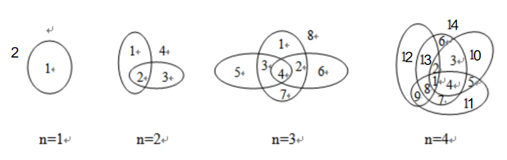

🪄 平面分割问题 🪐
👋 嗨，魔法几何学家！我是你的算法向导！
拿起你的魔法画笔，在空白的纸上画出相交的魔法光环。让我们一起探索“点、线、面”交织出的神秘递推法则吧！
📜 任务清单 (题目描述)
假设在一个无限大的平面上，我们要画出 n 条封闭的曲线（你可以把它想象成奇形怪状的圆圈）。
画图规则：
- 每两条曲线之间，都恰好相交于 2 个点。
- 任意三条曲线，绝对不会相交在同一个点上。
计算任务： 当你画完 n 条封闭曲线后，整个平面会被切割成多少个不同的碎块（区域）？
📥 魔法输入阵：
(平面上画了 3 条封闭曲线)
3
📤 奇迹输出阵：
(一共分割出了 8 个区域)
8
🧠 魔法道具箱 (核心图解：交点与区域的裂变)
遇到几何分割问题，最好的魔法就是“画图找规律”！让我们看看每次画下新的魔法光环时，平面上究竟发生了什么神奇的变化：

👆 看这幅神奇的推演图，区域数量在疯狂裂变！👆
-
n = 1
第一条曲线落下，把平面分成了“圈内”和“圈外”。总计 2 个区域。
-
n = 2
第 2 条曲线与第 1 条产生 2 个交点。被分成了 2 段线，新增 2 个区域。
总计 2 + 2 = 4 个区域。
-
n = 3
第 3 条曲线要与前 2 条都相交，产生 4 个交点。被分成了 4 段线，新增 4 个区域。
总计 4 + 4 = 8 个区域。
-
n = 4
第 4 条曲线与前 3 条相交，产生 6 个交点。被分成了 6 段线，新增 6 个区域。
总计 8 + 6 = 14 个区域。
✨ 递推的终极奥义
从上面的裂变过程中，我们发现了一个无比清晰的规律：每当画第 i 条曲线时，它必须和前面画好的 (i - 1) 条曲线全部相交！
- 🎯 交点诞生： 每条旧曲线都会给它贡献 2 个交点，所以一共会产生 2 * (i - 1) 个交点。
- ✂️ 线段分割： 对于一个封闭的圆圈，上面有几个交点，它就会被剪成几段线（比如，圆上切 3 刀就会变成 3 段弧）。
- 🌟 区域裂变： 最神奇的一步来了！每一段被剪开的新线段，都会像栅栏一样，把原本的一个大区域“一分为二”。也就是说：多出一段线，就新增一个区域！
💡 结论：画第 i 条曲线时，一定会新增 2 * (i - 1) 个区域！
f(n) = f(n-1) + 2 * (n - 1)
📘 C++ 魔法秘籍 (知识点)
- ⚙️ 循环累加魔法： 在 C++ 中，我们可以把递推公式翻译成非常直观的 for 循环。我们先设一个初始状态 a = 2 (即 n=1 的状态)，然后从第 2 条曲线开始，每次往里面累加新增的区域 2 * (i - 1)。
- 📦 函数封装： 将核心逻辑写在单独的 int f(int n) 函数中，能让你的 main 函数看起来非常干净清爽，这可是资深魔法师的良好习惯哦！
💻 C++ 终极法术 (代码详解)
#include <iostream>
using namespace std;
int f(int n) {
int a = 2;
for(int i = 2; i <= n; i++) {
a += 2 * (i - 1);
}
return a;
}
int main() {
int n;
cin >> n;
cout << f(n);
return 0;
}
🐍 Python 魔法秘籍 (知识点)
- ✨ range() 的边界问题： 在 Python 中写循环累加时，for i in range(2, n + 1): 是标准写法。记住，range 函数是“包头不包尾”的，想要循环到第 n 条曲线，第二个参数必须要写成 n + 1 才可以哦！
- 🎯 一气呵成的优雅： Python 同样可以把逻辑封装在 def 中，配合 if __name__ == "__main__": 运行，这是非常标准且专业的工程写法。
💻 Python 终极法术 (代码详解)
def f(n):
a = 2
for i in range(2, n + 1):
a += 2 * (i - 1)
return a
def main():
n = int(input())
print(f(n))
if __name__ == "__main__":
main()
💡 技巧和重点总结 (划重点啦)
- 🌟 找规律的终极武器是“画图”： 像这种几何问题，不要妄想在大脑里凭空想象 n=10 的情况！乖乖拿出草稿纸，把 n=1, 2, 3 的情况画出来，把数字列在一旁，你就能一眼看出递增的差值（+2, +4, +6...）。
- 🌟 “点线面”的降维思维： 这个题目的推导过程非常经典：通过已知直线的数量推导交点数 -> 通过交点数推导被切开的线段数 -> 通过线段数推导新增的面（区域）数。这就是数学思维的魅力所在。
- 🌟 递推 vs 数学公式： 虽然我们这里练习的是用 for 循环的递推算法，但如果你把 2 + 2 + 4 + ... + 2(n-1) 用等差数列求和公式算出来，就会得到一个通项公式 O(1)：n * n - n + 2。用这个公式算，连循环都不需要啦！